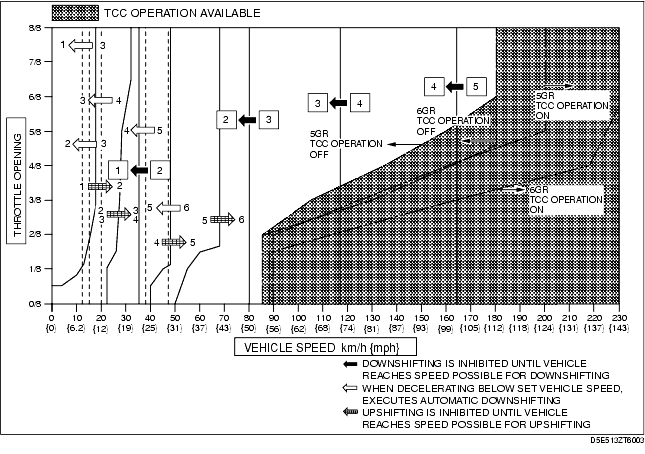

Technical Guide ➭ TRANSMISSION/TRANSAXLE ➭ AUTOMATIC TRANSMISSION[SJ6A-EL] ➭ MANUAL MODE SHIFT CONTROL OPERATION [SJ6A-EL]
MANUAL MODE SHIFT CONTROL OPERATION [SJ6A-EL]
id051311326200
{: #wp1059780}
Manual Mode Shift
• When the selector lever is shifted over from the D to M range position, the M range switch in the selector lever component turns on, sending a manual mode command signal to the TCM which activates the manual mode shift control.
• When in manual mode and the selector lever is operated in the back (+) direction, the up switch in the selector lever component is turned on and an up-shift command signal is input to the TCM.
- The TCM, triggered by the up-shift command signal, carries out shifting by outputting an operation signal to the shift control solenoid.
• Conversely, when the selector lever is operated in the forward (-) direction, the down switch in the selector lever component turns on, and a down-shift command signal is input to the TCM.
- The TCM, triggered by the down-shift command signal, carries out shifting by outputting an operation signal to the shift control solenoid if the vehicle speed is less than the set speed and the gear position is 2GR or above.
• The up/down operation of the steering shift switch is the same as the manual operation of the selector lever.
• The TCM utilizes a specialized M range automatic shift diagram. Due to this, restriction of manual shift demand and automatic control of downshifting is carried out, reducing load on the AT, preventing engine over-rev and ensuring drive stability.
|
Shift control {: #wp1059970} |
Note {: #wp1059972} |
|
|---|---|---|
|
1GR→2GR up-shift command, at low speed {: #wp1059886} |
• To reduce load on the AT, upshifting is inhibited until vehicle reaches speed possible for upshifting {: #wp1059888} |
|
|
2GR→3GR up-shift command, at low speed {: #wp1059991} |
||
|
3GR→4GR up-shift command, at low speed {: #wp1060001} |
||
|
4GR→5GR up-shift command, at low speed {: #wp1060011} |
||
|
5GR→6GR up-shift command, at low speed {: #wp1060042} |
||
|
5GR→6GR up-shift command, low ECT {: #wp1060065} |
• To rapid engine warming-up, upshifting to 6GR is inhibited {: #wp1060068} |
|
|
6GR→5GR down-shift command, above set speed {: #wp1060124} |
• To prevent engine over-rev, downshifting is inhibited until vehicle reaches speed possible for downshifting {: #wp1060127} |
• Gear position indicator light flash to alert driver {: #wp1060130} |
|
5GR→4GR down-shift command, above set speed {: #wp1060170} |
||
|
4GR→3GR down-shift command, above set speed {: #wp1060160} |
||
|
3GR→2GR down-shift command, above set speed {: #wp1060150} |
||
|
2GR→1GR down-shift command, above set speed {: #wp1060140} |
||
|
In 6GR deceleration, speed goes below coast-down set speed (deceleration down- shift) {: #wp1060231} |
• To assure drive stability, automatically downshifts from 6GR to 5GR {: #wp1060234} |
|
|
In 5GR deceleration, speed goes below coast-down set speed (deceleration down- shift) {: #wp1060291} |
• To assure drive stability, automatically downshifts from 5GR to 4GR {: #wp1060294} |
|
|
In 4GR deceleration, speed goes below coast-down set speed (deceleration down- shift) {: #wp1060281} |
• To assure drive stability, automatically downshifts from 4GR to 3GR {: #wp1060284} |
|
|
In 3GR deceleration, speed goes below coast-down set speed (deceleration down- shift) {: #wp1060271} |
• To assure drive stability, automatically downshifts from 3GR to 2GR {: #wp1060274} |
|
|
In 2GR deceleration, speed goes below coast-down set speed (deceleration down- shift) {: #wp1060261} |
• To assure drive stability, automatically downshifts from 2GR to 1GR {: #wp1060264} |
Shift Diagram
